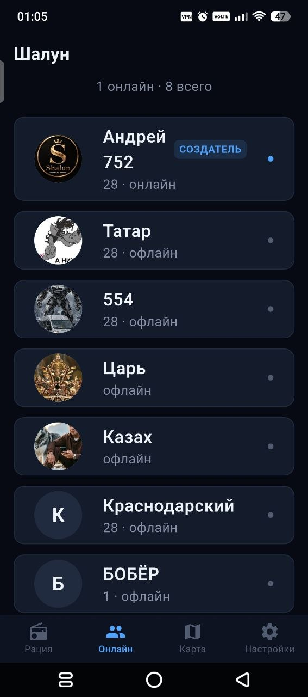
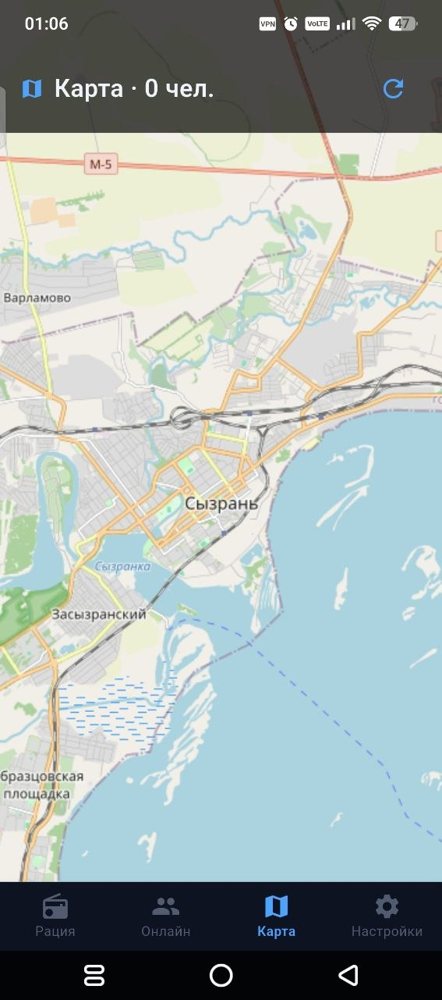
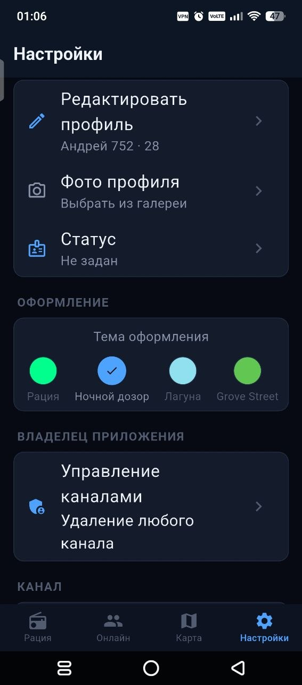
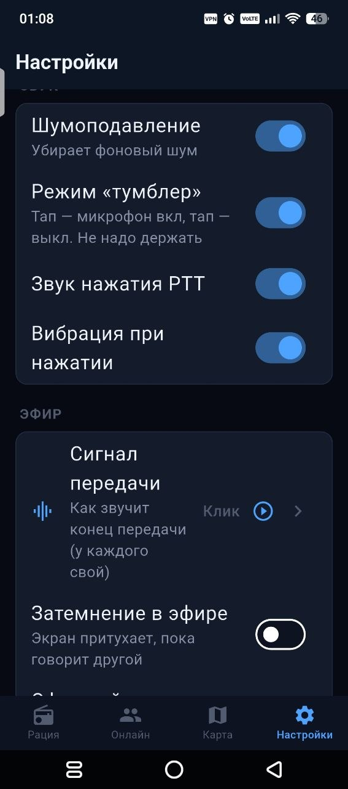
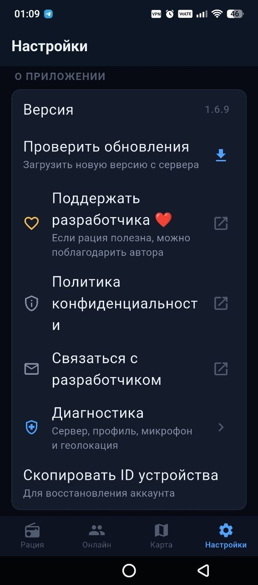

Эфир свободен. Команда на связи.
Нажми «ГОВОРИТЬ», когда нужно передать сообщение. Остальное приложение сделает само.
Закрытые каналы, голосовой эфир, карта участников и всё, что нужно команде в движении.

Шалун помогает быстро услышать своих, понять, кто рядом, и держать канал под контролем.
Нажми «ГОВОРИТЬ», когда нужно передать сообщение. Остальное приложение сделает само.
Push-to-talk без лишних экранов и переписки.
Каждый сам решает, показывать ли свою геопозицию участникам.
Приглашения, заявки и управление участниками в одном месте.
Позывной, статус, фото и оформление под свой сценарий.
Рация, участники, карта и настройки собраны в одном понятном интерфейсе.



Шумоподавление, тумблер, звук PTT, вибрация и сигнал передачи. Выбирай, как должна ощущаться связь.


Профиль редактируется, версия обновляется с сервера, диагностика проверяет связь и разрешения. Все важные действия собраны в настройках.
Политика конфиденциальностиСкачай Шалун и создай канал для своей команды.